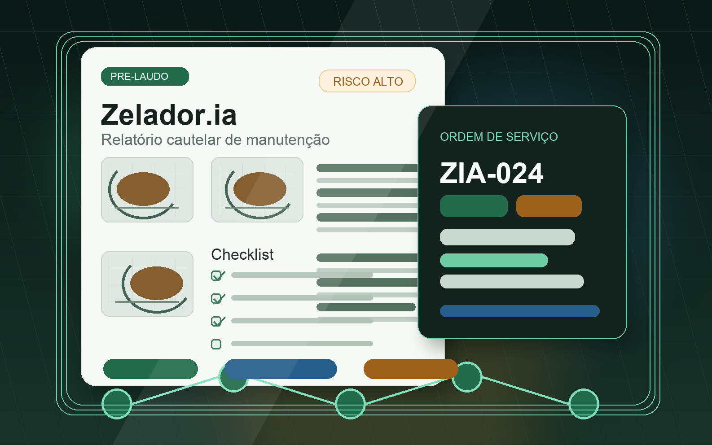

Saúde | alta prontidão
Controle de Touca
Landing para agenda e capacidade de toucas hipotérmicas.
Abrir landing Operia Lab
Tenho interesse
Operia Lab
Tenho interesse
Hub de landings
Abra rapidamente as landings, showcases e demos criadas para apresentar a Operia Lab em conversas com leads, parceiros e potenciais clientes.
Páginas comerciais
Use esta aba como uma central de navegação. O mapa comercial ajuda a priorizar; aqui você abre cada material diretamente.
Landing para agenda e capacidade de toucas hipotérmicas.
Abrir landing
Landing para navegação oncológica e proteção de ciclos.
Abrir landing
Landing para diagnóstico de inflação real por cupom fiscal.
Abrir landing
Showcase para conferência operacional de guias e protocolos.
Abrir showcase
Landing para leitura documental, sinais fiscais e conferência assistida.
Abrir landing
Landing para fluxo de reservas, motorista, parceiro e operação.
Abrir landingRanking interno de prontidão para decidir o que demonstrar primeiro.
Abrir mapa